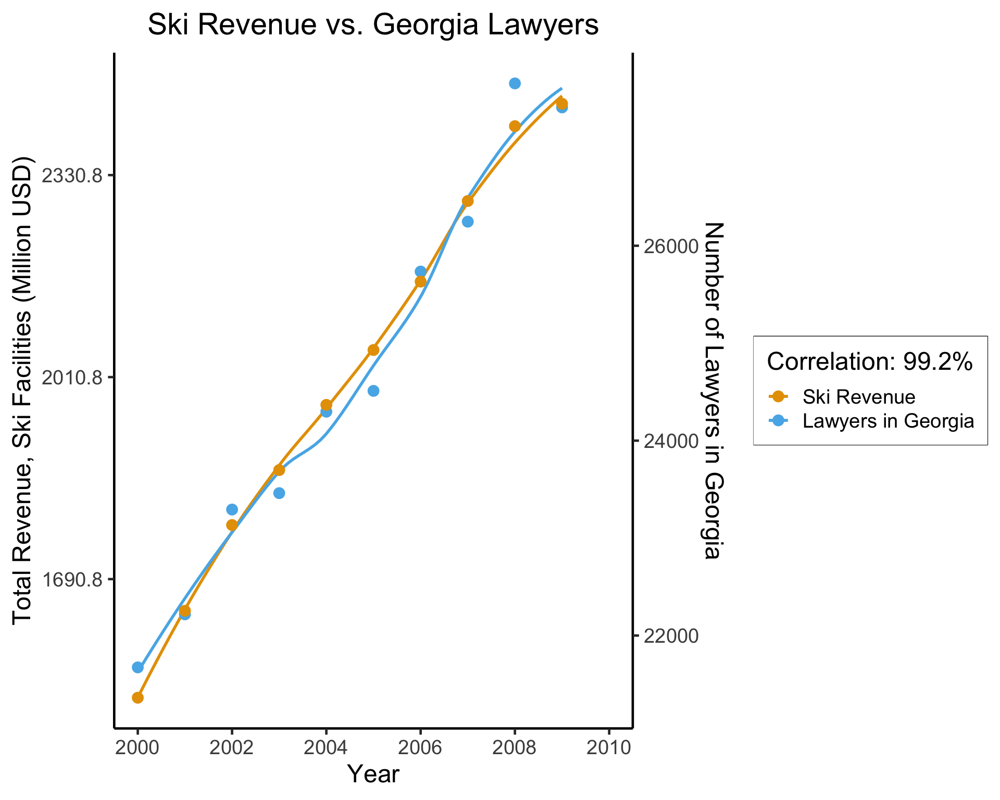

Week 5: Context-Sensitive Fairness
DSAN 5450: Data Ethics and Policy
Spring 2024, Georgetown University
Jeff Jacobs
Wednesday, February 14, 2024
Context-Free \(\rightarrow\) Context-Sensitive
\[ \DeclareMathOperator*{\argmax}{argmax} \DeclareMathOperator*{\argmin}{argmin} \newcommand{\nimplies}{\;\;\not\!\!\!\!\implies} \]
Impossibility Results
- tldr: We cannot possibly achieve all three of equalized positive rates (often also termed “anti-classification”), classification parity, and calibration (regardless of base rates)
- More alarmingly: We can’t even achieve both classification parity and calibration, except in the special case of equal base rates
“Impossibility” vs. Impossibility
- Sometimes “impossibility results” are, for all intents and purposes, mathematical curiosities: often there’s some pragmatic way of getting around them
- Example: “Arrow’s Impossibility Theorem”
- [In theory] It is mathematically impossible to aggregate individual preferences into societal preferences
- [The catch] True only if people are restricted to ordinal preferences: “I prefer \(x\) to \(y\).” No more information allowed
- [The way around it] Allow people to indicate the magnitude of their preferences: “I prefer \(x\) 5 times more than \(y\)”
- In this case, though, there are direct and (often) unavoidable real-world barriers that fairness impossibility imposes üòï
Arrow’s Impossibility Theorem
- Aziza, Bogdan, and Charles are competing in a fitness test with four events. Goal: determine who is most fit overall
| Run | Jump | Hurdle | Weights | |
|---|---|---|---|---|
| Aziza | 10.1” | 6.0’ | 40” | 150 lb |
| Bogdan | 9.2” | 5.9’ | 42” | 140 lb |
| Charles | 10.0” | 6.1’ | 39” | 145 lb |
- We can rank unambiguously on individual events: Jump: Charles \(\succ_J\) Aziza \(\succ_J\) Bogdan
- Now, axioms for aggregation:
- \(\text{WP}\) (Weak Pareto Optimality): if \(x \succ_i y\) for all events \(i\), \(x \succ y\)
- \(\text{IIA}\) (Independence of Irrelevant Alternatives): If a fourth competitor enters, but Aziza and Bogdan still have the same relative standing on all events, their relative standing overall should not change
- Long story short: only aggregation that can satisfy these is ‚Äúdictatorship‚Äù: choose one event, give it importance of 100%, the rest have importance 0% üò∞
ProPublica vs. Northpointe
- This is‚Ķ an example with 1000s of books and papers and discussions around it! (A red flag üö©, since, obsession with one example may conceal much wider range of issues!)
- But, tldr, Northpointe created a ML algorithm called COMPAS, used by court systems all over the US to predict “risk” of arrestees
- In 2016, ProPublica published results from an investigative report documenting COMPAS’s racial discrimination, in the form of violating equal error rates between black and white arrestees
- Northpointe responded that COMPAS does not discriminate, as it satisfies calibration
- People have argued about who is “right” for 8 years, with some progress, but… not a lot
So… What Do We Do?
- One option: argue about which of the two definitions is “better” for the next 100 years (what is the best way to give food to the poor?)
It appears to reveal an unfortunate but inexorable fact about our world: we must choose between two intuitively appealing ways to understand fairness in ML. Many scholars have done just that, defending either ProPublica’s or Northpointe’s definitions against what they see as the misguided alternative. (Simons 2023)
- Another option: study and then work to ameliorate the social conditions which force us into this realm of mathematical impossibility (why do the poor have no food?)
The impossibility result is about much more than math. [It occurs because] the underlying outcome is distributed unevenly in society. This is a fact about society, not mathematics, and requires engaging with a complex, checkered history of systemic racism in the US. Predicting an outcome whose distribution is shaped by this history requires tradeoffs because the inequalities and injustices are encoded in data—in this case, because America has criminalized Blackness for as long as America has existed.
Why Not Both??
- On the one hand: yes, both! On the other hand: fallacy of the “middle ground”
- We’re back at descriptive vs. normative:
- Descriptively, given 100 values \(v_1, \ldots, v_{100}\), their mean may be a good way to summarize, if we have to choose a single number
- But, normatively, imagine that these are opinions that people hold about fairness.
- Now, if it’s the US South in 1860 and \(v_i\) represents person \(i\)’s approval of slavery, from a sample of 100 people, then approx. 97 of the \(v_i\)’s are “does not disapprove” (Rousey 2001) — in this case, normatively, is the mean \(0.97\) the “correct” answer?
- We have another case where, like the “grass is green” vs. “grass ought to be green” example, we cannot just “import” our logical/mathematical tools from the former to solve the latter! (However: this does not mean they are useless! This is the fallacy of the excluded middle, sort of the opposite of the fallacy of the middle ground)
- This is why we have ethical frameworks in the first place! Going back to Rawls: “97% of Americans think black people shouldn’t have rights” \(\nimplies\)“black people shouldn’t have rights”, since rights are a primary good
Bringing in Context
Motivation: Linguistic Meaning
The Distributional Hypothesis (Firth 1968, 179)
You shall know a word by the company it keeps!
- Related to Chomsky’s context-free vs. context-sensitive distinction!
- But why is it relevant to DSAN 5450?…
The “Meaning” of Fairness
The Distributional [Fairness] Hypothesis
You shall know “fairness” by the company it keeps [i.e., the context it incorporates].
- Context-free (confusion-matrix-based) fairness: “plug the confusion matrix values into a formula and see if the formula is satisfied”
- Context-sensitive fairness: analyze fairness relative to a set of antecedents regarding how normative concerns should enter into our measurements of fairness
Similarity-Based Fairness
Group Fairness \(\rightarrow\) Individual Fairness
- The crucial insight of Dwork: group-level fairness does not ensure that individuals are treated fairly as individuals
- Exactly the issue we’ve seen with utilitarianism: optimizing society-level “happiness” may lead to individuals being brutally mistreated (e.g., having their rights violated)
- So, at a high level, Dwork’s proposal could provide a Rawls-style ordering: individual fairness lexically prior to group-level fairness (optimize group-level fairness once individual-level is satisfied)
The (Normative!) Antecedent
Fairness Through Awareness (Dwork et al. 2011)
Individuals who are similar with respect to a task should be classified similarly.
- Not well-liked in industry / policy because you can’t just “plug in” results of your classifier and get True/False “we satisfied fairness!” …But this is exactly the point!
Bringing In Context
- In itself, the principle of equal treatment is abstract, a formal relationship that lacks substantive content”
- The principle must be given content by defining which cases are similar and which are different, and by considering what kinds of differences justify differential treatment
- Deciding what differences are relevant, and what kinds of differential treatment are justified by particular differences, requires wrestling with moral and political debates about the responsibilities of different institutions to address persistent injustice (Simons 2023, 51)
Remember Distance Metrics?(!)
- A core element in both similarity-based and causal fairness!
- Already difficult to choose a metric on pragmatic grounds (ambulance needs to get to hospital)
- Now people will also have fundamental normative disagreements about what should and should not determine difference

Satisfying Individual vs. Group Fairness
An algorithm is individually fair if, for all individuals \(x\) and \(y\), we have
\[ \textsf{dist}(r(x), r(y)) \leq \textsf{dist}(x, y) \]
\(\implies\) an advertising system must show similar sets of ads to similar users.
It achieves group fairness-through-parity for two groups of users \(S\) and \(T\) when:
\[ \textsf{dist}(\mathbb{E}_{s \in S}[r(s)], \mathbb{E}_{t \in T}[r(t)]) \leq \varepsilon \]
where \(\mathbb{E}_{s \in S}\) and \(\mathbb{E}_{t \in T}\) denote the expectation of ads seen by an individual chosen uniformly among \(S\) and \(T\). This definition implies that the difference in probability between two groups of seeing a particular ad will be bounded by \(\varepsilon\).
Given these definitions: Individual fairness \(\nimplies\) group fairness, and vice versa! (Riederer and Chaintreau 2017)
The Importance of Not Excluding Race!
- On HW2 you will see how, on the one hand: excluding race from the similarity metric ensures race-blind fairness
- But, on the other hand: race-blind fairness can not only maintain but also amplify preexisting inequalities
- By including race in our similarity metric, we can explicitly take this into account!
- Ex: someone with a (morally irrelevant) disadvantage due to birth lottery who achieves an SAT score of 1400 is similar to someone with a (morally irrelevant) advantage due to birth lottery who achieves an SAT score of 1500
Equality of Opportunity
- This notion (last bullet of the previous slide) is contentious, to say the least
- But also, crucially: our job is not to decide the similarity metric unilaterally!
- The equality of opportunity approach is not itself a similarity metric!
- It is a “meta-algorithm” for translating normative positions (consequents of an ethical framework) into concrete fairness constraints that you can then impose on ML algorithms

Roemer’s Algorithm
- Roughly, the Equality of Opportunity algorithm boils down to:
- Input 1 (!): A set of attributes \(X_{\text{advantage}}\) that a society (real or hypothetical) considers normatively relevant for an outcome, but that people are not individually responsible for (e.g., race or nationality via birth lottery)
- Input 2: A set of attributes \(X_{\text{merit}}\) that a society considers appropriate to hold people individually responsible for (e.g., effort, sacrificing short-term pleasure for longer-term benefits, etc.)
- Step 1: Set of individuals in society \(S\) is partitioned into subsets \(S_i\), where \(i\) is some combination of particular values for the attributes in \(X_{\text{advantage}}\)
- Step 2: Individuals’ context-sensitive scores are computed relative to their group \(S_i\), as \(z\)-score of their \(X_{\text{merit}}\) value relative to distribution of \(X_{\text{merit}}\) values across \(S_i\)
- Outcome: Now that we have incorporated social context, by converting the original context-free units (e.g., numeric SAT score) into context-sensitive units (\(z\)-score of numeric SAT score within distribution of comparable individuals), we can compare people across groups on the basis of context-sensitive scores!
Causal Fairness
The State of the Art!
- My view of the current state of fairness in AI: measures which explicitly model causal connections between variables of interest are the most promising for robust notions of fairness
- Robust in the sense of:
- Being normatively desirable (as in, matching the key tenets of our ethical frameworks) while also being
- Descriptively tractable (as in, concretely implementable in math/code, and transparent enough to allow us to evaluate and update these implementations, using a process like reflective equilibrium).
The Antecedent
Since it’s impossible to eliminate information about sensitive attributes like race/gender/etc. from our ML algorithms, fairness should instead be defined on the basis of how this sensitive information “flows” through the causal chain of decisions which lead to an given (observed) outcome
The New Object of Analysis: Causal Pathways
The reason this approach is so promising is because, once we have a model of the causal connections among the variables that we care about (socially/normatively), and among the variables that are used by a Machine Learning algorithm, we can then use techniques developed by statisticians who study causal inference to block certain “causal pathways” that we deem normatively unjustifiable while allowing other pathways that we deem to be normatively justifiable.
Causal Fairness in HW2
Given this, the first subpart of this portion of the assignment will focus specifically on helping you develop intuition around the way of thinking required to make the jump from the correlational approach used in statistics and probability generally (and used in DSAN 5100 specifically!) to the causal approach which builds on the correlational approach but has a stricter standard for determining whether two or more Random Variables are related to one another. Then, in the second subpart, you will take this intuition and use it to evaluate fairness in a real-world setting!
Causal Building Blocks
- DSAN 5100 precedent: nodes in the network \(X\), \(Y\) are Random Variables, connections \(X \leftrightarrow Y\) are joint distributions \(\Pr(X, Y)\)
- Directional edges \(X \rightarrow Y\), then, just represent conditional distributions: \(X \rightarrow Y\) is \(\Pr(Y \mid X)\)
- Where we’re going: connections \(X \leftrightarrow Y\) represent unknown but extant causal connections between \(X\) and \(Y\), while \(X \rightarrow Y\) represents a causal relationship between \(X\) and \(Y\)
- Specifically, \(X \rightarrow Y\) now means: an intervention that changes the value of \(X\) by \(\varepsilon\) causes a change in the value of \(Y\) by \(f(\varepsilon)\)
The Intuitive Problem of Causal Inference
(Based on Spurious Correlations, Tyler Vigen)
The Fundamental Problem of Causal Inference
The only workable definition of “\(X\) causes \(Y\)”:
Defining Causality
\(X\) causes \(Y\) if and only if:
- X temporally precedes \(Y\) and
- In two worlds \(W_0\) and \(W_1\) where everything is exactly the same except that \(X = 0\) in \(W_0\) and \(X = 1\) in \(W_1\), \(Y = 0\) in \(W_0\) and \(Y = 1\) in \(W_1\) (Hume 1739)
- The problem? We live in one world, not two simultaneous worlds üò≠
What Is To Be Done?

Face Everything And Rise: Controlled, Randomized Experiment Paradigm
- Find good comparison cases: Treatment and Control
- Without a control group, you cannot make inferences!
- Selecting on the dependent variable…
Selecting on the Dependent Variable

- Jeff’s rant: If you care about actually solving social issues, this should infuriate you
Complications: Selection
- Tldr: Why did this person (unit) end up in the treatment group? Why did this other person (unit) end up in the control group?
- Are there systematic differences?
- Vietnam/Indochina Draft: Why can’t we just study [men who join the military] versus [men who don’t], and take the difference as a causal estimate?
Complications: Compliance
- We ideally want people assigned to the treatment to take the treatment, and people assigned to the control to take the control.
- “Compliance”: degree to which this is true in experiment
- High compliance = most people actually took what they were assigned
- Low compliance = lots of people who were assigned to treatment actually took control, and vice-versa
- What problems might exist w.r.t compliance in the Draft example?
Next Week and HW2: Experimental \(\rightarrow\) Observational Data
- In observational studies, researchers have no control over assignment to treatment/control üò®
- On the one hand… Forget Everything And Run [to randomized, controlled experiments], if you can.
- On the other hand‚Ķ statisticians over the last ~4 centuries have developed fancy causal inference tools/techniques to help us Face Everything And Rise üßê
For Now: Matching
- In a randomized, controlled experiment, we can ensure (since we have control over the assignment mechanism) that the only systematic difference between \(C\) and \(T\) is that \(T\) received the treatment and \(C\) did not
- In an observational study, we “show up too late”!
- Thus, we no longer refer to assignment but to selection
- And, our job is to figure out (reverse engineer!) the selection mechanism, then correct for its non-randomness: basically, we “transform” from observational to experimental setting through weighting
References
Dwork, Cynthia, Moritz Hardt, Toniann Pitassi, Omer Reingold, and Rich Zemel. 2011. “Fairness Through Awareness.” arXiv. https://doi.org/10.48550/arXiv.1104.3913.
Firth, John Rupert. 1968. Selected Papers of J.R. Firth, 1952-59. Longmans.
Hume, David. 1739. A Treatise of Human Nature: Being an Attempt to Introduce the Experimental Method of Reasoning Into Moral Subjects; and Dialogues Concerning Natural Religion. Longmans, Green.
Kiat, Lim Swee. 2018. “Machines Gone Wrong.” PhD thesis, Singapore University of Technology; Design. https://machinesgonewrong.com/about/.
Riederer, Christopher, and Augustin Chaintreau. 2017. “The Price of Fairness in Location Based Advertising.” Fairness, Accountability, and Transparency Workshop on Responsible Recommendation. https://doi.org/10.18122/B2MD8C.
Roemer, John E. 1998. Equality of Opportunity. Harvard University Press.
Rousey, Dennis C. 2001. “Friends and Foes of Slavery: Foreigners and Northerners in the Old South.” Journal of Social History 35 (2): 373–96. https://www.jstor.org/stable/3790193.
Shahid, Rizwan, Stefania Bertazzon, Merril L. Knudtson, and William A. Ghali. 2009. “Comparison of Distance Measures in Spatial Analytical Modeling for Health Service Planning.” BMC Health Services Research 9 (1): 200. https://doi.org/10.1186/1472-6963-9-200.
Simons, Josh. 2023. Algorithms for the People: Democracy in the Age of AI. Princeton University Press.
DSAN 5450 Week 5: Context-Sensitive Fairness